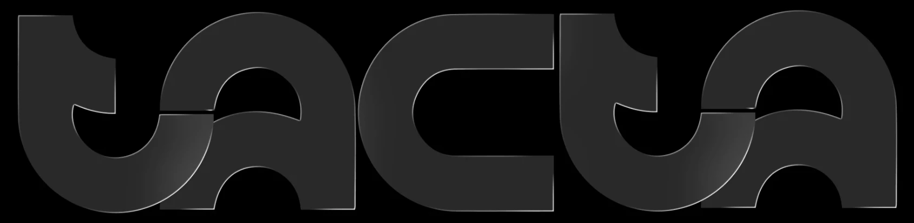
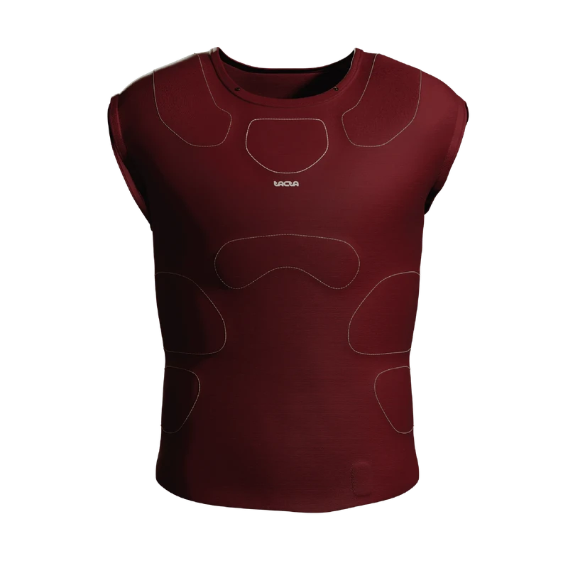
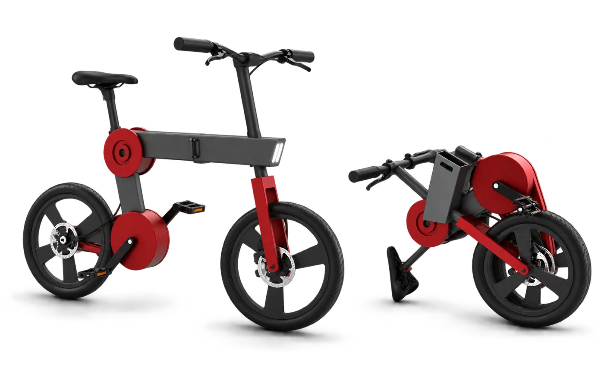
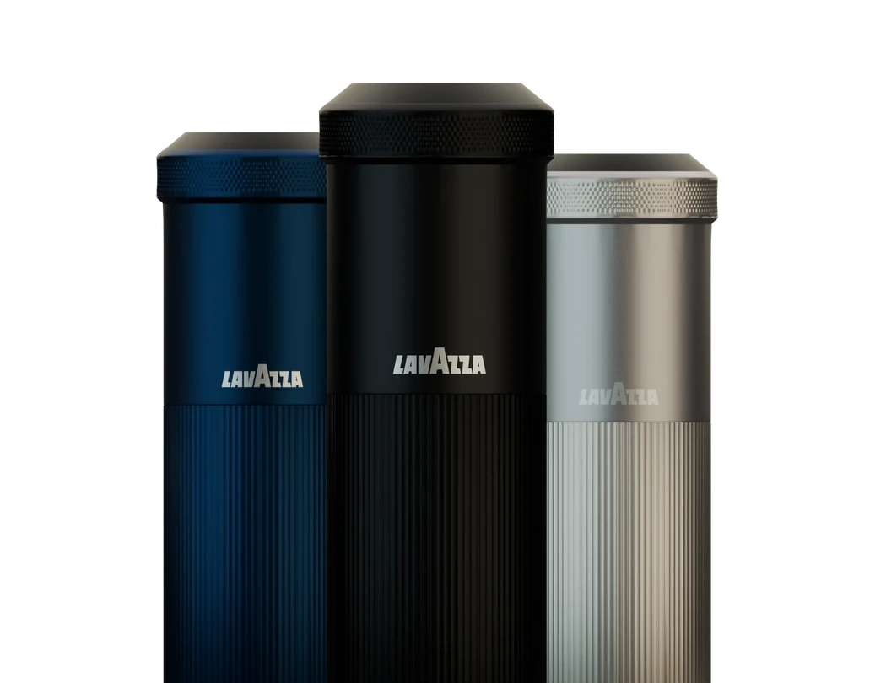

Matteo Vercesi.
Designer con la passione per la ricerca, la forma e le storie che restano.




Dopo il liceo classico, la mia passione per il design è nata da esperienze che mi hanno spinto a iscrivermi al Politecnico di Torino, dove ho capito davvero cosa significhi progettare.
Qui ho imparato a unire ricerca, creatività e visione critica, trasformando le idee in strumenti concreti per comunicare, innovare e raccontare storie.
Nei progetti qui sopra trovi i lavori con cui ho potuto esprimere me stesso al 100% — per ognuno trovi il team, il mio ruolo e gli strumenti utilizzati.
Software & strumenti
- Adobe Creative Suite
- Blender
- Rhino 3D
- Figma
- [anno] Liceo Classico
- [anno] Politecnico di Torino — Design
- [anno] Aggiungi qui un'altra tappa — esperienza, tirocinio, premio...
Un progetto in mente? Scrivimi.
Sono disponibile per nuove opportunità e collaborazioni — raccontami la tua idea, ti rispondo volentieri.
Scrivimi